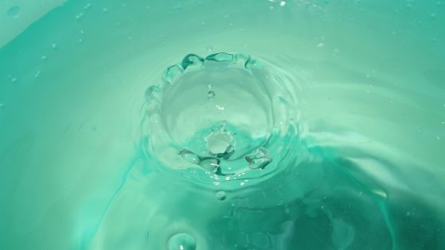
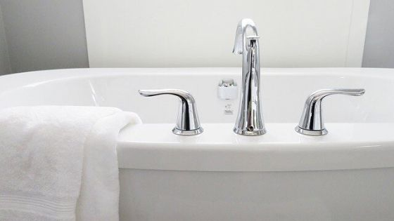

朝、夜、風呂上がり？塗るタイミングはいつ？
NULC 薬用スリープロテクトジェル（オールインワンジェル）


スリープロテクトジェルっていつ使えば効果が高いのかな？
お化粧する前に使っても大丈夫？
そんな疑問、ありますよね。もちろんおすすめの塗るタイミングがあります。
今回はそのおすすめの塗るタイミングについてお話したいと思います。
スキンケアのおすすめのタイミングは基本的に顔を濡らし汚れを落とした後です。
それぞれを詳しく見ていきますね。
朝の洗顔のあとのタイミング
朝起きて洗顔したあと、そのまま保湿。これが一番効果的です。
汚れを落としてきれいな状態の肌。濡らしてうるおいがある肌。この状態をキープさせます。
また、太陽を浴びることはシミの原因となるのですが、このスリープロテクトジェルはシミに対して防いでくれる「薬用」の成分を持っています。
そのため、太陽の光を浴びる前に使うことでシミの発生を防いできれいな肌を保ち続けさせるのです。
＞＞ NULC 薬用スリープロテクトジェル（オールインワンジェル）の効果
また、季節が冬の場合、外の空気は乾燥しているため肌もすぐに乾いてしまいます。
洗顔で汚れを洗い流す直後の、うるおいが肌にあるうちにジェルで肌を保護する。これがとても効果的なのです。
オールインワンジェルなので朝の忙しい時間でも時短してスキンケアができる
これは言われなくても分かってる。そんな声が聞こえてきますが一応書いておきますね。
- 化粧水＋乳液＋美容液＋クリーム⇒４つ使うのは時間がかかる
- オールインワンジェル⇒１つでいいのでほとんど時間がかからない
忙しくてもスキンケアを妥協せずに時短できる。ほんとありがたいですよね。
夜のお風呂のあとのタイミング
もう一つの効果的なタイミングは夜のお風呂のあとのタイミングとなります。
こちらも朝の洗顔後と同じように汚れを洗い流した後、うるおいが肌に残っている状態でジェルを使います。
夜このスリープロテクトジェルを使うと、嬉しい理由があります。
このスリープロテクトジェルにはニキビを防ぐのが得意なオールインワンジェルです。
つまりこのジェルをお風呂後で夜寝る前に使うことでニキビを防ぎ、きれいな肌を守るという使い方が効果的なのです。
また肌荒れからも守ってくれるので、寝ていて頬や顎が肌荒れるなんていうのも防いでくれてありがたいですよ。
塗るタイミングまとめ

・洗顔によって汚れを落とし、きれいな状態をキープ
・濡れた肌のうるおいがあるうちに保湿
・太陽を浴びる前にケアすることで日焼けによるしみを防ぐ
・冬の乾燥した空気に触れる前に肌荒れを防止
・入浴によって汚れを落とし、きれいな状態をキープ
・濡れた肌のうるおいがあるうちに保湿
・寝ているときにできるニキビを防ぐ
・睡眠による頬や顎の肌荒れの防止
効果的なタイミングでスキンケアをすることで、しっかりとあなたの大切な肌をケアしてくださいね。
- NULC 薬用スリープロテクトジェル（オールインワンジェル）トップ
- NULC 薬用スリープロテクトジェル（オールインワンジェル）の効果
- NULC 薬用スリープロテクトジェル（オールインワンジェル）の使い方
- NULC 薬用スリープロテクトジェル（オールインワンジェル）の使うタイミング
- NULC 薬用スリープロテクトジェル（オールインワンジェル）は乾燥肌でも大丈夫？
- NULC 薬用スリープロテクトジェル（オールインワンジェル）の評価・評判・口コミ
- NULC 薬用スリープロテクトジェル（オールインワンジェル）の値段は安い？
- NULC 薬用スリープロテクトジェル（オールインワンジェル）と人気のジェルを比較
- NULC 薬用スリープロテクトジェル（オールインワンジェル）は子供にも使える？
- NULC 薬用スリープロテクトジェル（オールインワンジェル）は無料でお試しはできる？
- NULC 薬用スリープロテクトジェル（オールインワンジェル）の会社ナルク（NULC）とは？